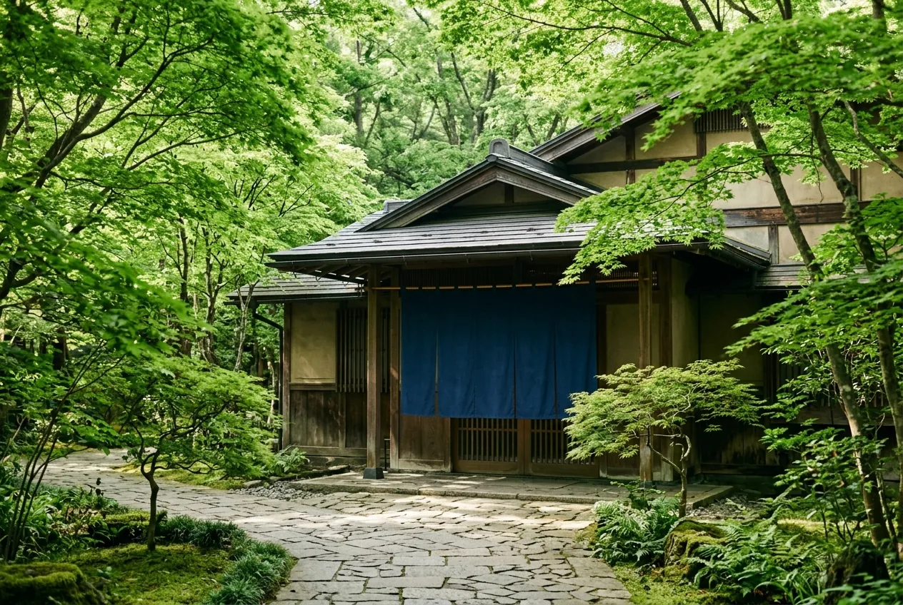

アクセス

湯畑から歩いて5分。
草津温泉バスターミナルからは、歩いて7分です。
所在地
※ 地図は湯畑のまわりのイメージです（架空の宿のため、宿の場所は表示されません）。
- 住所
- 〒377-0000 群馬県吾妻郡草津町草津0-0（架空の住所です）
- 電話
- 0000-00-0000（受付 9:00〜20:00）
- チェックイン
- 15:00〜18:00／チェックアウト 10:00
交通案内
電車とバスで
- JR上野駅特急「草津・四万」で約2時間30分
- JR長野原草津口駅JRバスで約25分
- 草津温泉バスターミナル歩いて7分、または宿の送迎（無料）
- ホテル千樹
高速バスで
- バスタ新宿・東京駅高速バスで約4時間
- 草津温泉バスターミナル歩いて7分、または宿の送迎（無料）
- ホテル千樹
お車で
- 関越自動車道 渋川伊香保IC国道353号・292号で約1時間30分
- ホテル千樹駐車場 30台（無料）
送迎と冬の道
- 送迎
- 草津温泉バスターミナルから 14:00〜18:00 の毎時0分（無料）
- 申し込み
- 前日までにお電話でお知らせください
11月下旬〜4月上旬にお車でお越しの方へ
草津は標高約1,200mの高原にあり、冬は道に雪や氷があります。スタッドレスタイヤかタイヤチェーンを必ずご用意ください。